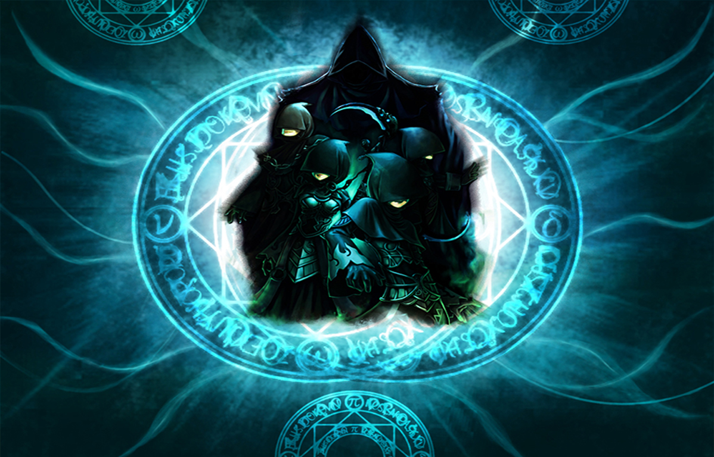

Tales of
PiratesDX
Expanded inventory, signed updates, and a leaner server. Follow the changes below.
Download for Windows All releases ↗- Released the full online installer 1.1.2 with the current game updates already included.
- Improved file verification speed and update-check responsiveness.
- Fixed new installations reusing updater receipts from an earlier installation at the same path.
Commit dates. Availability depends on your client and the server revision.
- Added fifteen stat-specific pet foods to the GM tools, preserving existing item IDs and level caps.
- Added gem-tier selection to GM grants, with validation at the server boundary.
- Fixed nine missing client gem bonus mappings. All 53 gem mappings are now covered.
- Fixed inventory capacity handling, transferred item metadata, and trade isolation.
- Optimized network dispatchers with an interruptible wake channel, replacing 2 ms idle polling. Idle worker pools wake explicitly during shutdown.
- Optimized entity-pointer validation with a constant-time lookup instead of a pool scan. Hate-tracking state is allocated on demand.
- Fixed Angela Junior pet equip values. Expanded content checks to catch generated tables that diverge from the canonical pack.
- Fixed inventory allocation failure paths and cleanup.
- Added local crash diagnostics that preserve native fault context and crash dumps.
CPU measurement details
The corrected October 6 comparison recorded container CPU at 192–214% before and 68–84% after. The chart uses approximate values of 200% and 75%; 100% equals one CPU core. Shared-host load differed between windows. This is an idle observation, not an official baseline or a measurement of busy-server throughput or player FPS.
- Released the full online inventory client 1.1.0.
- Changed inventory to a default of 96 slots: six columns and sixteen scrollable rows. Aqua is the default theme; dark is selectable.
- Fixed temporary-bag transactions, lottery bounds, forge fees, and item-operation failure paths.
Inventory migration instructions
Existing characters reset once to 96 slots and can use all six expansion items again. If an item occupies slot 96 or above, the reset waits until those slots are empty and you reconnect. The inventory release introduced the separate Tales of Pirates DX Online Inventory folder.
- Added permanent signing keys and signed release catalogs, replacing the expiring test update setup.
- Added automatic client and launcher upgrades.
- Changed the HUD to separate pet portraits and level badges, restore compact artwork, and use matching party frames.
- Added installer upgrade verification and support diagnostics. Damaged or incompatible managed installations are rejected.
- Added signed, transactional updates with recovery for interrupted installations.
- Changed informed crafting guesses to use the server's dice result.
- Fixed forge cancellation leaving the lifeskill lock held. Abandoned minigames no longer leave the character stuck.
- Changed four crafting recipes to inactive.
- Changed content packaging to emit from canonical packs and bind paired client/server content stages to the release.
- Added GM pet food for 1, 5, or 10 levels, bounded by the pet level cap.
- Fixed Angela and Angela Junior progression to use the normal fruit and ration rules.
- Fixed Fairy of Evil possession's EXP and drop bonuses.
- Fixed skill grants admitting inappropriate monster and boss combat skills. Helpful innate skills no longer replace the default attack.
- Added a
/helpcommand reference with usage tooltips. Rebuilt/itemsand/worldsaround shared GM menus. - Optimized the GM item browser with cached glyph widths, search debouncing, and text measurement on demand. Opening it no longer builds the grid twice.
- Fixed high-speed movement stutter.
- Fixed teleport coordinates across 35 world maps. An invalid destination falls back to a valid birth point instead of disconnecting the player.
Install the full online client 1.1.2, then open its launcher. Use its separate Tales of Pirates DX Live folder to preserve your earlier installation.